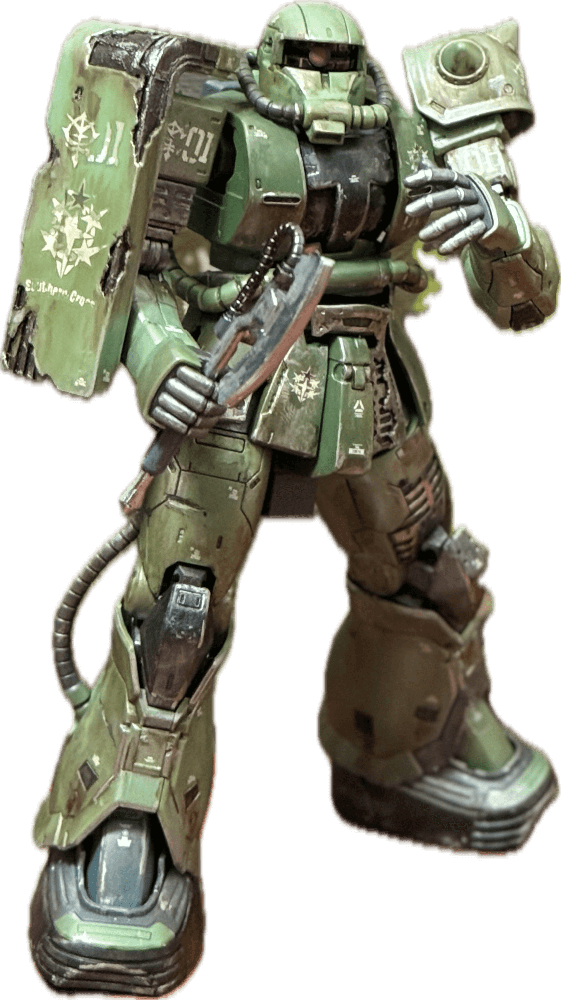

Profile
HTML
CSS
Javascript
React
React-Native
Next.js
Firebase
Redux
Figma
Adobe
Share My Thinking
' 만드는 것의 가치 '

개발에 있어 애정이 만드는 힘
누가 만드느냐에 따라 달라지는 결과물과 특별한 가치
그 가치를 알고 애정을 붙이다 보면 더욱 좋은 것을 만들기 위한 일종의
'학습과 노력'은 '재미와 놀이'로 변합니다.
이것을 맛본 사람은 개발에 있어서도 그것을 대하는 태도부터 다르다고
생각합니다. 저도 무언가를 개발할 때, 즐기며 개발하는 것과 그렇지
않은 것에 대한 결과물이나 학습의 과정에서 차이가 있었습니다.
그렇기에 저는 제가 즐겁게 할 수 있는 것을 개발하고자 합니다. 그리고
그 것은 사용자들에게 좋은 경험을 주고 즐겁게 해주는 것이 될
것입니다.
' 좋은 생각은 어디로부터 오는가? '


문제해결 능력과 창의성은 無에서 나오는 것이 아니다
다양한 지식들을 바탕으로 이를 만들어내야 한다
창의적이거나 문제해결을 위한 아이디어(생각)는 그저 상상력같은 것이
좋다고 할 수 있는 것이 아닙니다. 물론 저도 이것을 다소 늦게
깨달았기에 더욱이 공부를 하고 있습니다. 해당 전문 지식을 포함해
과학, 문학, 철학, 예술과 같은 학문들 역시 무의미한 것이 아닌 생각의
힘을 길러주는 힘이라고 생각합니다.
저의 문제점은 무작정 개발에 뛰어드는 사람이었습니다. 이러한 방식의
개발은 더욱 효율적인 코딩을 할 수 없음을 알았습니다. 하나하나의
나무를 심지만 최고의 숲은 만들 수 없었습니다. 현재는 코딩(개발)에
필요한 기본기와 지식에 더욱 노력중이며 더욱 성장하고 있습니다.
' 내가 되고싶은 개발자는 '
더욱 풍부한 생활로 이끌 수 있는 것을 만들자
개발을 나를 위한 것이 아닌 많은 사람을 위한 것
제가 만드는 것으로 인해 사람들이 기뻐했으면 좋겠습니다. 그렇기에
그런 것을 만들고 싶습니다. 이는 단순히 남들만을 위한 것이 아닌 저를
위한 목표이기도 합니다.
그러한 것을 만든다면 저 역시 스스로 더 좋은 것을 만들기 위해
노력할테고 저의 원동력이 되어 성장으로 이끌어줄 것이기 때문입니다.
' 내가 되고싶은 미래 '
가벼워보이지만 무거운 사람
이끌 수 있는 힘이 있고 신뢰를 받으며 신뢰하는 사람
원피스를 보며 루피라는 캐릭터에 매력을 느꼈고 이런 사람이 되고싶다고
생각했습니다. 평소에는 장난기 많고 바보같지만 누구보다 진중하며
따듯한 마음을 가졌고 자신의 꿈을 찾아가는 캐릭터이기 때문입니다.
동료들을 신뢰하고 신뢰받으며 다같이 즐겁게 나아가는 모습이 정말
이상적이고, 어쩌면 비현실적일지 몰라도 이러한 사람이 되는 것이
목표입니다.